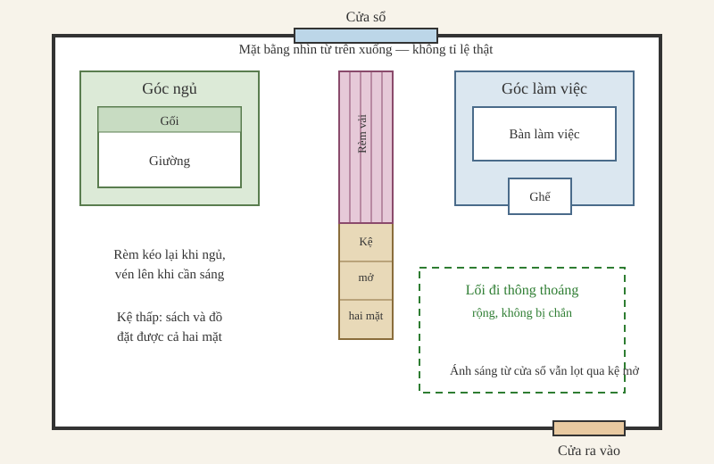

Chia không gian phòng trọ nhỏ bằng rèm và kệ mở
Tác giả: Ruler
Một căn phòng trọ chỉ có một gian thường phải gánh cùng lúc nhiều việc: ngủ, làm việc, tiếp khách, đôi khi cả nấu ăn. Giường ngủ nằm ngay cạnh bàn làm việc, khách bước vào cửa là nhìn thẳng thấy chỗ ngủ, và buổi tối bạn muốn nghỉ mà đèn bàn bên kia vẫn sáng.
Chia phòng bằng rèm vải và kệ mở là cách tạo ranh giới mà không cần xây vách. Rèm che được tầm nhìn, kệ mở vừa chia phòng vừa đựng đồ.
Bài này chỉ bàn cách chia phòng trọ nhỏ bằng rèm vải và kệ mở. Cách treo rèm không khoan đã có trong bài “Trang trí tường nhà thuê không cần khoan”, và cách làm kệ sách từ ván gỗ cũ đã có trong bài “Tận dụng ván gỗ cũ làm kệ sách”.
Có hai giới hạn bạn cần nhớ trước khi bắt đầu. Thứ nhất, rèm và kệ mở chỉ là giải pháp tạm, không thay được tường xây: chúng che được tầm nhìn và tạo cảm giác riêng tư, nhưng không cách âm như tường thật, không khóa được, và không biến một phòng thành hai phòng riêng. Thứ hai, người thuê nhà nên hỏi chủ nhà trước khi lắp đặt bất cứ thứ gì cố định, kể cả việc bắt vít để cố định kệ vào tường. Điều quyết định vẫn là hợp đồng thuê của chính bạn, như bài “Trang trí tường nhà thuê không cần khoan” đã nói rõ.
Vì sao nên chia phòng trọ nhỏ
Phòng trọ nhỏ không thiếu đồ, mà thiếu ranh giới. Giường, bàn, tủ và bếp đặt chung một gian thì việc nào cũng nhìn thấy việc kia: bạn ngồi làm việc thì thấy giường ngay bên cạnh và chỉ muốn nằm xuống, bạn nằm nghỉ thì thấy bàn làm việc đầy giấy tờ và không thả lỏng được. Chia phòng không làm phòng rộng thêm, nhưng nó cho mỗi việc một chỗ riêng, để bạn bước qua một ranh giới là biết mình đang làm việc hay đang nghỉ ngơi.
Hai khu vực cần tách ra rõ nhất thường là góc ngủ và góc làm việc. Góc ngủ cần kín đáo và tối hơn vào lúc nghỉ, còn góc làm việc cần sáng và gọn để tập trung. Khi hai góc này lẫn vào nhau, giấc ngủ dễ bị ánh sáng màn hình và tiếng gõ phím làm phiền, còn giờ làm việc dễ bị chiếc giường bên cạnh kéo đi.
Cặp khu vực thứ hai hay gặp là góc tiếp khách và góc bếp. Khách ngồi chơi mà nhìn thẳng vào bếp đang nấu thì cả hai bên đều khó thoải mái, mùi nấu ăn cũng dễ bám vào chăn gối và quần áo để gần bếp. Một tấm rèm ở ranh giới bếp vừa che được tầm nhìn, vừa nhắc mọi người rằng bên kia là khu vực nấu nướng. Nhưng rèm vải không giữ được mùi, và bạn không nên treo rèm sát bếp nấu, vì vải gần lửa là nguy hiểm.
Trước khi mua rèm hay kệ, bạn nên vẽ sơ đồ phòng ra giấy, đánh dấu giường, bàn, tủ và cửa sổ, rồi trả lời ba câu hỏi: khu vực nào cần kín nhất, khu vực nào cần sáng nhất, và lối đi chính chạy qua đâu? Chỉ chia phòng thành hai khu vực trong một lần làm.
Chia bằng rèm vải
Rèm vải là cách chia phòng mềm nhất, và cũng là cách dễ thay đổi nhất. Bạn kéo rèm lại khi cần riêng tư, và vén rèm sang một bên khi muốn phòng rộng trở lại. Khi chuyển nhà, bạn tháo rèm xuống, cuộn lại và mang đi, không để lại gì trên tường hay trần nhà, miễn là bạn dùng cách treo không khoan như thanh căng đã nói trong bài “Trang trí tường nhà thuê không cần khoan”.
Chọn vải là bước quyết định rèm che được bao nhiêu và phòng còn sáng bao nhiêu. Vải dày vừa, ví dụ vải polyester dày vừa, che kín tầm nhìn mà vẫn nhẹ để treo và giặt máy được, theo gợi ý của nguồn hướng dẫn về rèm ngăn phòng trọ được dẫn cuối bài. Vải cản sáng hợp với người ở ghép hoặc làm ca đêm, vì góc ngủ cần tối vào ban ngày để ngủ được. Vải voan hoặc vải mỏng thì ngược lại: chỉ phân chia nhẹ nhàng, giữ phòng sáng và thoáng, hợp khi bạn chỉ cần một ranh giới mờ chứ không cần che kín. Về màu sắc, nguồn hướng dẫn rèm ngăn phòng trọ gợi ý màu sáng như trắng ngà, be, xám nhạt giúp phòng nhỏ trông rộng hơn, và nên tránh màu quá tối.
Chiều dài và chiều rộng của rèm quyết định rèm che kín hay để hở. Nguồn hướng dẫn rèm ngăn phòng trọ nêu rèm nên dài gần chạm sàn, và rộng gấp khoảng 1,5 đến 2 lần đoạn cần che để có nếp đẹp và che kín hơn. Đo đoạn cần che trước khi mua vải, rồi cộng thêm phần rộng này, thay vì mua một tấm vải vừa đúng đoạn cần che rồi thất vọng vì rèm căng phẳng và hở hai bên.
Thanh căng không khoan, đã hướng dẫn trong bài “Trang trí tường nhà thuê không cần khoan”, là cách phổ biến nhất cho phòng trọ, nhưng nó chỉ hợp với khoảng hẹp và rèm vải nhẹ; khoảng quá dài hoặc rèm quá nặng dễ làm thanh tụt hoặc võng ở giữa, theo nguồn hướng dẫn rèm ngăn phòng trọ. Một nguồn hướng dẫn khác bằng tiếng Anh cũng nêu cùng giới hạn: thanh căng hợp với vải nhẹ và đoạn ngang không rộng quá khoảng 3 mét thì mới không bị võng. Bạn không nên treo rèm vải dày và nặng lên một thanh căng dài, và cũng không nên treo thêm đồ lên thanh căng, vì thanh chỉ chịu được sức nặng của tấm rèm.
Một điều rèm vải không làm được là cách âm. Vải dày có thể hấp thụ một phần tiếng vang, nhưng không chặn được tiếng trò chuyện hay tiếng ồn lớn, theo nguồn hướng dẫn bằng tiếng Anh được dẫn cuối bài. Nếu bạn ở ghép và cần yên tĩnh để làm việc, bạn nên kết hợp rèm với tai nghe, hoặc thỏa thuận giờ yên lặng với người ở cùng, thay vì trông chờ vào tấm rèm. Rèm vải cũng cần được giặt định kỳ, vì rèm treo giữa phòng hứng bụi nhiều hơn rèm cửa sổ, và rèm gần bếp còn ám mùi nấu ăn, nên bạn nên chọn vải giặt máy được và kéo rèm nhẹ tay.
Chia bằng kệ mở hai mặt
Kệ mở hai mặt là cách chia phòng cứng cáp hơn rèm, và nó làm được hai việc cùng lúc: chia phòng và đựng đồ. Một chiếc kệ đứng giữa phòng, mở cả hai mặt, vừa là vách ngăn vừa là chỗ để sách, hộp đựng đồ và vài món trang trí. Bạn có thể lấy đồ từ phía góc ngủ, và người ngồi phía góc làm việc cũng lấy được đồ từ phía của mình.
Kệ mở khác với tủ kín ở một điểm quan trọng: ánh sáng vẫn lọt qua các ngăn mở. Nguồn hướng dẫn ngăn phòng ngủ nêu rõ ưu điểm lớn nhất của kệ sách hai mặt là nó vẫn cho ánh sáng đi qua các ngăn mở, giúp phòng không bị tối. Một nguồn hướng dẫn bằng tiếng Anh cũng nêu cùng ý: kệ mở cho ánh sáng đi qua, giữ cảm giác thoáng đãng trong khi vẫn tạo ranh giới rõ ràng. Vì vậy kệ mở hợp với phòng trọ chỉ có một cửa sổ.

Chiều cao của kệ quyết định phòng còn thoáng hay bị chật. Nguồn hướng dẫn ngăn phòng ngủ gợi ý vách ngăn nên có chiều cao khoảng 1,4 đến 1,8 mét, hoặc có khe hở để nhìn xuyên qua, và riêng kệ sách hai mặt làm vách ngăn thì cao khoảng 1,6 đến 2 mét. Các con số này chỉ là gợi ý, không phải quy tắc bắt buộc: kệ thấp khoảng ngang thắt lưng tạo ranh giới nhẹ, vẫn nhìn qua được và phòng vẫn thoáng; kệ cao tới gần trần che kín hơn, nhưng cũng dễ làm phòng có cảm giác chật và nặng.
Đồ đặt trên kệ cũng là một phần của vách ngăn: sách xếp đứng tạo thành những mảng kín, hộp đựng đồ che được tầm nhìn ở tầng thấp, còn những món trang trí thưa thớt để ánh sáng lọt qua. Bạn nên xếp đồ nặng ở tầng dưới và đồ nhẹ ở tầng trên, để kệ không bị nặng đầu và dễ đổ về phía trước, và không nên dồn đồ nặng về một phía, vì kệ lệch nặng một bên sẽ dễ nghiêng. Cách xếp sách và kiểm tra kệ đã có trong bài “Tận dụng ván gỗ cũ làm kệ sách” của website này, bạn nên xem lại bài “Tận dụng ván gỗ cũ làm kệ sách” trước khi xếp đầy kệ. An toàn là phần không được bỏ qua: kệ đứng giữa phòng không tựa vào tường thì không có gì giữ nó lại khi có người va vào. Nguồn hướng dẫn bằng tiếng Anh được dẫn cuối bài nêu rõ: bất cứ món đồ nội thất cao nào trên khoảng 76 cm (30 inch) cũng nên được cố định vào tường bằng phụ kiện chống đổ, như bản lề chữ L hoặc dây đai an toàn, để ngăn đồ đổ vào người. Bạn nên nhờ người có kinh nghiệm làm giúp bước này nếu bạn không chắc chắn, và cần hỏi chủ nhà trước khi bắt vít vào tường, vì đây là việc chạm vào tường, không phải việc treo tạm. Nếu chủ nhà không đồng ý cho bắt vít, bạn nên chọn kệ thấp và nặng ở chân đế, đặt sát một bức tường làm điểm tựa, và không để trẻ nhỏ chơi gần kệ.
Kệ mở cũng có thể là kệ bạn tự làm từ ván gỗ cũ, theo cách đã hướng dẫn trong bài “Tận dụng ván gỗ cũ làm kệ sách”. Trước khi xoay kệ ra giữa phòng, bạn nên kiểm tra kệ còn chắc không, các mối nối có lỏng không, và mặt kệ có võng không.
Chia bằng kết hợp rèm và kệ
Rèm và kệ mở làm tốt hai việc khác nhau, nên kết hợp chúng thường cho kết quả tốt hơn dùng riêng một thứ. Kệ mở tạo ranh giới cứng ở nửa dưới của phòng, còn rèm tạo ranh giới mềm ở nửa trên. Bạn có thể đặt kệ thấp ở giữa phòng để chia góc ngủ và góc làm việc, rồi treo rèm phía trên kệ để che phần còn lại khi cần riêng tư. Ban ngày bạn vén rèm lên, phòng vẫn sáng và thoáng, chỉ còn kệ thấp làm ranh giới. Buổi tối bạn kéo rèm xuống, góc ngủ trở nên kín đáo hơn mà không cần dựng thêm vách nào.
Một cách kết hợp khác là đặt rèm ở một đoạn và kệ ở đoạn còn lại của cùng một đường chia. Ví dụ, đoạn gần cửa sổ bạn đặt kệ mở thấp để ánh sáng vẫn lọt qua, còn đoạn gần giường bạn treo rèm để che kín tầm nhìn vào chỗ ngủ.
Khi kết hợp, bạn cần tránh làm đường chia phòng trở nên nặng nề. Kệ cao cộng với rèm dày trên cùng một đường chia sẽ tạo thành một bức tường gần như kín, và phòng trọ nhỏ sẽ có cảm giác bị cắt đôi thành hai hộp chật. Bạn nên chọn một thứ làm chính và một thứ làm phụ: nếu kệ đã cao thì rèm nên mỏng và nhẹ, nếu rèm đã dày và kín thì kệ nên thấp.
Giữ ánh sáng và lối đi khi chia phòng
Chia phòng thất bại thường không phải vì rèm xấu hay kệ xấu, mà vì đường chia đã chặn mất ánh sáng hoặc chặn mất lối đi. Phòng trọ nhỏ thường chỉ có một cửa sổ, nên bất cứ thứ gì đặt trước cửa sổ đều lấy đi ánh sáng của cả phòng. Bạn không nên đặt kệ cao hay treo rèm dày ngay trước cửa sổ, và không nên đặt đường chia chạy ngang qua cửa sổ. Nguồn hướng dẫn ngăn phòng ngủ nêu nguyên tắc đầu tiên là không chắn sáng và không chắn gió: vách ngăn quá cao, quá kín hoặc đặt ngay trước cửa sổ sẽ làm phòng tối tăm, ẩm thấp và ngột ngạt.
Lối đi cũng cần được giữ lại trước khi bạn đặt bất cứ thứ gì xuống. Nguồn hướng dẫn ngăn phòng ngủ gợi ý nên chừa khoảng trống ít nhất 70 đến 90 cm để di chuyển thoải mái, đặc biệt là vào ban đêm khi cần đi vệ sinh. Bạn nên hiểu con số này là gợi ý, không phải quy tắc bắt buộc, và nên đo bằng chính cơ thể mình: bạn đi qua lối đó với một chậu quần áo trên tay có lọt không, và khi có khách tới chơi thì hai người tránh nhau ở lối đó có được không. Bạn cũng nên chừa lối ra cửa chính luôn thông thoáng, vì rèm hay kệ không được chắn lối thoát ra ngoài trong trường hợp khẩn cấp, theo lưu ý an toàn của nguồn hướng dẫn rèm ngăn phòng trọ.
Gió và không khí cũng cần được lưu thông qua đường chia. Bạn nên để một khe hở ở phía trên kệ, hoặc chọn kệ có ngăn mở thưa, để quạt và gió tự nhiên vẫn đi qua được, và nên mở rèm ra vào ban ngày khi không cần riêng tư, để phòng được thông thoáng và đón ánh sáng. Bạn nên thử sống với đường chia mới trong một tuần trước khi quyết định giữ nguyên: trong tuần đó, bạn sẽ biết rèm có vướng khi bạn mở cửa tủ không, kệ có chắn lối bạn đi ra ban công không, và góc làm việc có đủ sáng vào buổi chiều không.
Kết luận
Chia phòng trọ nhỏ bằng rèm và kệ mở không cần xây vách, không cần khoan tường, và không cần mua nhiều đồ mới. Bạn chỉ cần xác định hai khu vực cần tách, thường là góc ngủ và góc làm việc, rồi chọn rèm vải cho chỗ cần che kín, chọn kệ mở hai mặt cho chỗ cần vừa chia phòng vừa đựng đồ, và kết hợp hai thứ khi một thứ chưa đủ. Tóm lại, giữ ba điểm sau: hỏi chủ nhà trước khi lắp đặt bất cứ thứ gì cố định, giữ ánh sáng và lối đi luôn thông thoáng, và cố định kệ cao chắc chắn để kệ không đổ vào người. Làm được ba việc đó, bạn sẽ có một căn phòng trọ nhỏ vẫn sáng và thoáng, nhưng mỗi việc đã có chỗ riêng của nó.
Nguồn tham khảo
- Rèm Cửa Mỹ Gia, "Rèm Ngăn Phòng Trọ: 4 Cách Lắp Không Cần Khoan, Rẻ Và Gọn" — thanh căng chỉ hợp với khoảng hẹp và rèm vải nhẹ, rèm vải dày vừa che kín tầm nhìn mà vẫn nhẹ, vải voan giữ phòng sáng và thoáng, rèm nên dài gần chạm sàn và rộng gấp khoảng 1,5–2 lần đoạn cần che, không treo đồ lên thanh căng, chừa lối ra cửa chính, giữ khoảng cách rèm với bếp (truy cập 23/11/2026): https://remcuamygia.com/rem-ngan-phong-tro/
- MHome Việt Nam, "Cách Ngăn Phòng Ngủ Đơn Giản: 15+ Ý Tưởng Phân Chia Không Gian Thông Minh Cho Phòng Nhỏ, Studio Và Chung Cư" — nguyên tắc không chắn sáng và không chắn gió, vách ngăn cao khoảng 1,4–1,8 m, kệ sách hai mặt cao khoảng 1,6–2 m và cho ánh sáng đi qua các ngăn mở, lối đi nên chừa ít nhất 70–90 cm (truy cập 23/11/2026): https://mhomevietnam.vn/vn/cach-ngan-phong-ngu-don-gian.html?p=69573
- Engineer Fix, "How to Close Off a Room Without a Wall" — thanh căng hợp với vải nhẹ và đoạn ngang không rộng quá khoảng 10 feet, vải dày hấp thụ một phần tiếng vang nhưng không chặn được tiếng trò chuyện, kệ mở cho ánh sáng đi qua, đồ nội thất cao hơn 30 inch nên cố định vào tường bằng phụ kiện chống đổ (truy cập 23/11/2026): https://engineerfix.com/how-to-close-off-a-room-without-a-wall/
- Apartment List, "12 Room Divider Ideas for Separating Space" — rèm chia phòng cần hỏi chủ nhà trước khi gắn móc lên trần, kệ mở hai mặt có thể làm vách ngăn vừa đựng đồ, kệ sách mở hai mặt dùng được cho góc ngủ trong căn hộ studio (truy cập 23/11/2026): https://www.apartmentlist.com/renter-life/room-divider-ideas